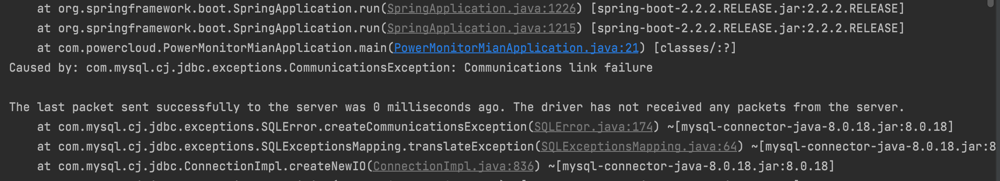
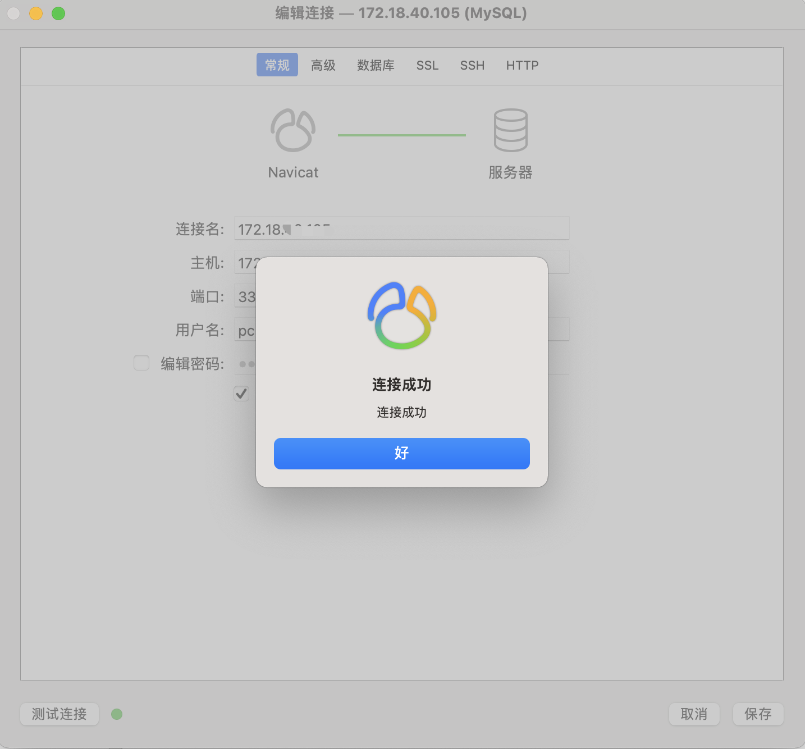

【BUG记录】Java连接mysql数据库报错：Communications link failure
问题描述
java项目（springboot）连接mysql出现如下错误：

1 | Caused by: com.mysql.cj.jdbc.exceptions.CommunicationsException: Communications link failure |
项目中配置的jdbc连接地址如下：
1 | =jdbc:log4jdbc:mysql://172.18.xxx.xxx:3306/xxxxdb?useUnicode=true&characterEncoding=utf8&serverTimezone=UTC |
但是通过navicat等工具可以正常的连接

原因
查了很多资料，发现在MySQL5.7之前的版本，安全性较低，存在任何用户都可以连接上的 test 库，所以官方在5.7版本加大了对隐私的保护。并且采用了默认 useSSL = true值防止对数据库的随意修改，到了8.0版本，仍然保留了SSL，并且默认值为 true，所以只要将 “?useSSL= false” 放在url表名后即可
解决办法
在配置的jdbc连接地址末尾带上如下参数即可：
1 | =false |
例如：
1 | =jdbc:log4jdbc:mysql://172.18.xxx.xxx:3306/xxxxdb?useUnicode=true&characterEncoding=utf8&serverTimezone=UTC&useSSL=false |
本博客所有文章除特别声明外，均采用 CC BY-NC-SA 4.0 许可协议。转载请注明来自 叶凡！